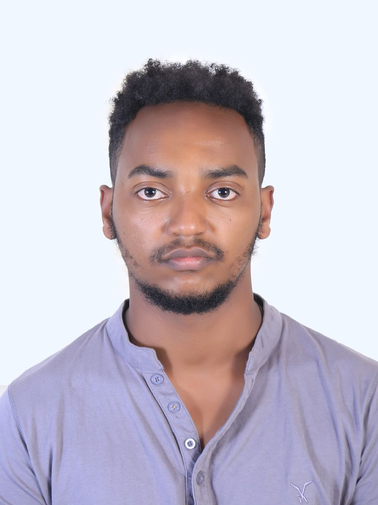

Yosef Fekade

Summary
I am a physics teacher with a passion for educating students on physics.
I have a strong background in Mechanical engineering,
and I use various teaching methods and technologies.
I have developed and implemented physics curricula, assessments, and experiments, and I have collaborated with other teachers and students.
Education
- Bachelor of Science in mechanical engineering
- Woldiya University (2016-2021)
Work experience
Skills
- Communicate effectively with any one from any background.
- Posses Leadership qualities
- Highly collaborative
- Creative
Awards and certifcations
Certifcation for 4 years summer volunteer programs in teaching(Augest 2016-2020)
Acknowledgement of performance during internship program- David roschil chilndren center( November 2020)
Other